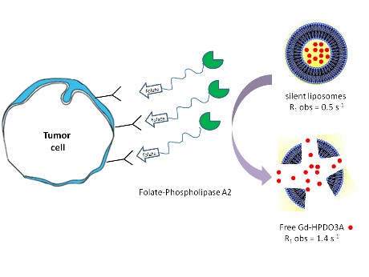
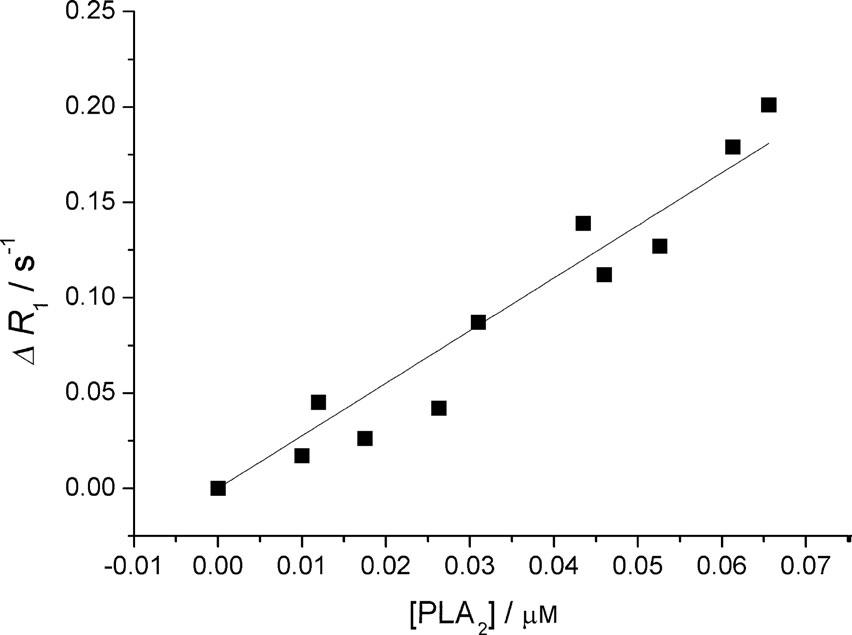

Quantitative measurement of marker expression in diseased cells is still a topic of considerable interest
and different methodologies are currently under intense scrutiny. This work aims at developing an in vitro
diagnostic method based on the release of paramagnetic species from relaxometrically “silent” liposomes
operated by the action of a phospholipase A2 (PLA2) previously targeted to the epitope of interest.
The released paramagnetic species causes an increase of the longitudinal water proton relaxation rate
proportional to the number of PLA2 bound to the cell outer surface.

The sensitivity of the herein proposed method, named R-ELISA, was attempted in the
detection of folate receptor expression on human ovarian cancer cells by functionalizing PLA2 with folic acid.
Receptor/cell number of 8.3 105 has been measured on IGROV-1 cells. The R-ELISA assay can detect nanomolar
cell suspension receptor concentrations and has been validated by well-established spectrofluorimetric procedures.

Figure: Calibration curve obtained by measuring DR1 versus [PLA2].
D. Alberti et al Angew. Chem. Int. Ed. 2014, 53, 3488 –3491